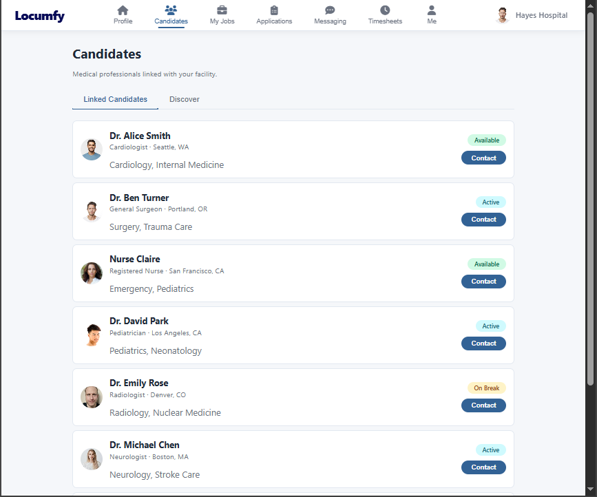

Who uses it
The same platform, tailored to each side of the market.
Professionals and facilities see different tools designed for what they each need — but they share one network, one messaging system, and one set of verified profiles.
For medical professionals
A polished mobile app where clinicians manage their entire career life — the way they already manage everything else on their phone.
- Profile — a rich, credential-verified professional profile
- Jobs — relevant openings matched to their specialty and location
- Network — connections, invitations, and suggested peers to grow their circle
- Feed & Messaging — industry news, posts, and direct conversations
- Timesheets — log hours worked, by week and month, tied to each assignment

The professional's mobile app
For facilities & recruiters
A web portal built for the people doing the hiring — hospitals, staffing agencies, and recruiters who need to find, vet, and manage clinicians at scale.
- Candidates — search verified professionals by skill, license, and specialty
- Jobs — post and manage open roles
- Applications — review and act on incoming applicants in one place
- Timesheets — approve hours submitted by working clinicians
- Standardized resumes — download a clean, facility-ready resume in one click

The facility & recruiter web portal